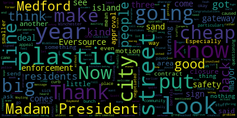

[Morell]: 15th regular meeting, July 25th 2023 at the Medford City Council is called to order. Mr. Clerk, please call the roll.
[Hurtubise]: Present. Present. Tonight. I'll just say present present six present one absent, please rise to
[Morell]: Announcements, accolades, remembrances, reports, and records. 23-374 offered by Councilor Collins and Councilor Tseng. Whereas our community values, embraces, and celebrates diversity in all its forms. Whereas Disability Pride Month is recognized each year in July to highlight the accomplishments, work, and advocacy of individuals with disabilities. Whereas our community is enriched by the contributions, perspectives, and presence of people with disabilities. Whereas Disability Pride Month provides an opportunity to recommit to empowering people with disabilities, ensuring equal access to all spaces and opportunities in our community, and recentering on areas in the city where we must improve accessibility in order to be a truly inclusive and equitable city. Be it therefore resolved that the Medford City Council recognize and celebrates July as Disability Pride Month. Councilor Collins.
[Collins]: Thank you, President Morell. Appreciate Councilor Tseng for bringing this resolution forward with me. And I also want to acknowledge school committee member McLaughlin who helped us with the idea. And she actually liaised with Boston City Council member Mejia in Boston who worked on a similar resolution. I loved the idea of making an official proclamation to recognize Disability Pride Month in Medford. It's celebrated across the nation, across the world. disability has always existed, it will always exist, and like any other facet of diversity in our society, it should be acknowledged, it should be celebrated, and we should make sure that everybody across every spectrum of human being is adequately accommodated and embraced in our community. Thank you.
[Morell]: Thank you, Councilor Collins. Councilor Tseng.
[Tseng]: Thank you so much. I want to thank Councilor Collins for introducing this with me, and also thank school committee member Melanie McLaughlin for giving us for helping us with this liaising and with giving us the idea for it. It's so important to make sure that all members of our community are not only seen but celebrated. I think for too long, folks with disabilities who lived in Medford haven't always felt like part of the community, and folks who have disabilities might have felt that. even felt that they couldn't completely be themselves in public or they had to hide something. And, or even that disability was something to be shameful about. And we know that's not true. And I think it's really important for all of us to take a forceful stand to let people be proud of who they are. And even if that means, you know, Changing how we work at City Hall, if that means taking a deep look at our policies, if that means making sure that things are ADA compliant in Medford, those are really important steps that we need to take. And Disability Pride Month gives us a chance for us to talk about those needed changes in our community and those needed investments. So I'm very happy to introduce this with Councilor Collins and very much looking forward to what we can do in the future. to address the needs of all of our residents.
[Morell]: Thank you, Councilor Tseng. Vice President Bears.
[Bears]: Thank you, Madam President. Thank you, Councilor Collins and Councilor Tseng for putting this forward, and to Member McLaughlin as well. I think in addition to everything that my colleagues have said, something that's really key to this is what is it going to take to make sure that our streets, sidewalks, and open spaces are safe and well-maintained? What is the funding gap there? How are we going to get there? We know that obviously we prioritize what everyone had just talked about around, you know, when we do a new construction project, when we do have all of these complete streets projects, we're prioritizing making sure that people with disabilities have access to our street sidewalks and open spaces. But when we are have such a big backlog and we don't have the time, you know, we have such a long timeline to get there. We also have to think about how many people are impacted by that. How many people can't get to the grocery store or the pharmacy or the dry cleaner or a restaurant or a park to sit in safely because the sidewalk on their street or on the main street near them just isn't in the condition that it needs to be or the ramp or the crosswalk isn't there. So, you know, while we celebrate Disability Pride Month, you know, taking that just taking that pride and taking those values and implementing them in action is part of what we're talking about when we're talking about our budget priorities and the need for significant additional funding to fix the city. Thank you.
[Morell]: Thank you, Vice Mayor Bears. Any further discussion? On the motion of Councilor Collins, seconded by Councilor Tseng. Mr. Clerk, please call the roll.
[Hurtubise]: Vice President Bears? Yes. Councilor Caraviello? Yes. Councilor Collins?
[Collins]: Yes.
[Scarpelli]: Yes.
[Hurtubise]: Yes.
[Morell]: Yes. Six in the firmness during the negative. One absent motion passes records the records of the meeting of June 20 2023 were passed to Councilor Knight Councilor Knight is absent so they will remain table. Yes.
[Hurtubise]: Those raisin canes, those raisin canes and the budget. I would move to approve.
[Bears]: Technically, I think the legal shot clocks start when we vote on it, not when we vote on the record, so.
[Caraviello]: Make sure there's no mistakes, that's why we approve the minutes the following week.
[Hurtubise]: Right.
[Caraviello]: Yeah, like I said, I don't remember what's on there, but if there are parameters that people are waiting for things, it could be, you know, might be a little detrimental for them.
[Morell]: Mr. Navarez, have you reviewed the records?
[Bears]: I took a look at them, they've been layering.
[Scarpelli]: Madam President, I looked at both.
[Morell]: You looked at them as well, Councilor Scarpelli?
[Scarpelli]: I did, I found them all, I found them in order.
[Morell]: Thank you.
[Scarpelli]: I'd second the motion.
[Morell]: Okay, so we have a motion from Councilor Scarpelli to approve second by Vice Mayor Bears and these are June, I was just gonna say these are for the June 20th records.
[Bears]: He said both, right?
[Morell]: He said both, okay. For June 20th.
[Hurtubise]: Yeah, I have been.
[Morell]: I think June 20th and July 11th regular meeting records. So motion from Councilor Scarpelli to approve second by Vice Mayor Bears. Mr. Clerk, call the roll when you are ready. please.
[Hurtubise]: Yes. Yes. Yes. Yes. Yes. Yes. Six in the affirmative negative one absent motion passes.
[Morell]: petitions, presentations, and similar papers. 23-375, petition for common victuals license by Zhao Hui Chen for Matsuba Izakaya Sushi Bar and Grill, 38 Riverside Avenue, Medford, Mass. I think it's on file, and I will hand it over to Councilor Scarpelli. Is the petitioner, you can come up to the mic, and then Councilor Scarpelli is the chair of the licensing commission, subcommittee. If you have any comments, I'll turn it over to you.
[Scarpelli]: Thank you, Madam President. Again, I apologize. Due to the rain, my schedule was diverted to work. So I'm in and out. So I apologize for my absence in person. But yeah, if I know this is exciting because I know Sushi is one of my family's favorite foods, but we wanted to make sure if the petitioner could give us a little brief description of their business, and then we can move on with my comments.
[Zhao Hui Chen]: Good evening, everyone. So my name is Chen. So I'm the owner for Matsue Sakaya. We gonna serve sushi, ramen, and Japanese grills. So, and we also got our BNY license as well. And me and my husband, we both in the field for more than 10 years now. So I think we be success on this one. Thank you.
[Scarpelli]: Thank you. Madam President, just a couple of questions. We do see everything is in order. The petitioner did everything they needed. Everything is signed off. Are you familiar with our hours or operations?
[Zhao Hui Chen]: Yes. Myself, I have a Chinese restaurant. So I was the one that running the rest of the business. So it's all on track right now. So I pass it over to the manager over there. And my husband, he's also a main chef for the other Japanese restaurant for more than 10 years now. So I believe we can run this business.
[Scarpelli]: Okay. So the hours of operations that you're looking for, I know that
[Zhao Hui Chen]: The business hours are 2 p.m. to 12 a.m.
[Scarpelli]: Okay. I do see everything in order, and if my colleagues have any questions, I would move approval.
[Morell]: Thank you. And you would just have to come back for the 12am. You just have to come back for the 11 to 12 portion.
[Zhao Hui Chen]: Oh, really?
[Bears]: Yeah, right here. It's right now. It's only requesting 10pm Sunday through Thursday and 1030pm Friday and Saturday. That's what so
[Morell]: So this would be just approving for those hours, and then you could apply with the clerk's office for a special permit.
[Zhao Hui Chen]: Is there any applications that I need to submit or?
[Scarpelli]: Yeah, you can meet with the clerk. I think that would, that might help you.
[Morell]: Yeah, for those extended hours, but this would approve it if we vote for it for the hours that are listed on the application. Okay, all right. Thank you. So we have a motion from Councilor Caraviello to approve. Any other questions from councilors? Seeing none, that motion is seconded by... Second, second. Vice President of Affairs, Mr. Clerk, please call the roll.
[Hurtubise]: Thank you. Vice President of Affairs. Yes. Councilor Caraviello. Yes. Councilor Collins. Yes. Councilor Nugent is absent. Councilor Scarpelli.
[Scarpelli]: Yes.
[Hurtubise]: Councilor Tseng.
[Scarpelli]: Yes.
[Hurtubise]: Councilor Morocco.
[Morell]: Yes. Six in the affirmative, zero in the negative, one absent, motion passes. Thank you. Thank you.
[Caraviello]: Good luck.
[Morell]: 23376 petition for common bishops license for so funny long for four or four seasons, but with T 34 Riverside Avenue, Medford Mass 02155. Thank you so much and we'll just turn over to Councilor Scarpelli real quick and then we'll come back to you.
[Scarpelli]: Okay, thank you again, Madam President and the Chair. I do have all the paperwork, everything is in order, but if the petitioner could give us a brief description. I know that boba tea is very, very popular, but just a description of your process would be important, so thank you.
[SPEAKER_00]: Thank you. Good evening, ladies and gentlemen. My name is Sophanis, I'm the new owner of Four Seasons Boba Tea. and I can introduce my store. So Boba tea is kind of pearl tea or Boba tea that are made from the milk and the tea and the papayoka also. So the ball and the papayoka in the bottom. So a couple of the teas that make a lot of people interested in that drinks. Thank you.
[Scarpelli]: Okay. And I see everything in order, Madam President. I would move approval. My colleagues have any questions.
[Morell]: Thank you. Any questions from the council?
[Bears]: Second the motion.
[Morell]: None. We have much for approval from Councilor Scarpelli, seconded by Vice President Bears. Mr. Clerk, please call the roll. Yes. Yes. Yes. Yes.
[Hurtubise]: Yes. Yes. Yes. Six in the affirmative, zero in the negative, one absent. Motion passes.
[Morell]: Thank you so much.
[Caraviello]: Congratulations.
[Morell]: Thank you. 23-377 petition for common victims licensed by Sophia K for Ho-Win Palace 2, formerly Tiki Island, 269 Middle 6 Ave, Medford, Massachusetts, 02155. Are you the petitioner for that one? Or do we have a petitioner for the online? Okay. Oh, sorry. I wasn't looking. Okay. Russell Chin, I will unmute you. We'll go to Councilor Scarpelli, and then I will also ask you to unmute. So we'll go to Councilor Scarpelli first.
[Scarpelli]: Thank you, Madam President. Again, I'm glad to see with such changes. I know we heard some sad news yesterday about a few establishments closing on Middlesex Ave. So the very popular site of Tiki Island, I'm glad that there's someone taking this over and the reputable owner. I think this is all of the paperwork seems in order. I think that just understanding the hours of operations that was an established business for a long time, and understanding the amount of employees. I think that if we just got a brief description of what we're doing, and then just answer those questions, and then open it up to our call my colleagues, that'd be great.
[SPEAKER_03]: Certainly. Thank you very much. Councilor Scarpelli. My name is Attorney Russell Chen. I'm representing the applicant Sophia Kee, she is no longer, she is not in the country at the moment, so I'm standing in for her and I apologize for her absence. Sophia is a principal of Chen Hong LLC. They do business as Ho Win Palace too, and they currently have an existing restaurant in Everett that she operates. So this will be her second restaurant. She's operated over there in Everett for quite a number of years successfully. And she intends to bring that same type of management skill and experience over to the new restaurant at Tiki Island.
[Scarpelli]: I have done some little research and she is a reputable owner. So we appreciate the opportunity to keep that business going, the Tiki Island spot going with such an owner. So I think that the hours of operations, I'm trying to find it on the sheets that I have. I know that-
[SPEAKER_03]: We had applied, I believe for 11 to 1am Monday through Saturday, Sunday, 12 to one but we understand that the city does have an ordinance in place regarding closure at 11 o'clock without a special permit. We're certainly happy to honor that. Okay.
[Scarpelli]: But that's what I just wanted to make sure we had that because I know a lot of the permits leave with the existing owner and their application. So I do see everything else in order, Madam President, I would move approval after any comments that my colleagues might have.
[Morell]: Thank you, Councilor Scarpelli. Vice President Bears.
[Bears]: Thank you, Madam President. Thank you, Attorney Chin. You may not have the answer to this question, but I have had it asked of me a couple of times this week. Do you know if there will be an interior renovation or if it will stay the same look inside?
[SPEAKER_03]: My, my understanding is that it will remain primarily the same inside however there may be some updating going on after the acquisition is completed to, you know, enhance the interior and make it a better place for the patrons to feel welcome.
[Scarpelli]: I know council because was saying I think the Buddha is very very important that they keep it.
[Bears]: We'd be happy to do that. Certainly not a condition of anything, but something the presidents were interested in.
[Caraviello]: Thank you, Madam President. Like Councilor Scott mentioned earlier, we had a closure on Middlesex Ave. Thankfully, this group has stepped in to avoid another closure in that area. I know our good friend Raymond is involved, and we welcome him back to Medford. He's a former owner of Mayling. So a motion for approval.
[Morell]: Thank you. On the motion of Councilor Caraviello, seconded by Councilor Tseng. Mr. Clerk, please call the roll.
[Hurtubise]: Yes. Yes. Yes. Yes. Yes. Yes.
[Morell]: Yes, six in the affirmative, zero in the negative, one absent, the motion passes.
[Scarpelli]: Madam President.
[Morell]: Councilor Scarpelli.
[Scarpelli]: I don't wanna waste anyone's time. I'm gonna be popping in and out, so instead of going and asking for individual votes to move forward, I'll text Councilor Caraviello when I pop back in, so I don't waste anyone's time, because I have to pop back into a program.
[Morell]: Okay, thank you.
[Scarpelli]: Okay, thank you.
[SPEAKER_03]: Thank you Councilors and thank you Madam President.
[Morell]: Thank you so much. Okay, going to motions orders and resolutions to three dash 378, or offered by prices and bears be it so resolved the method city council by the Metric City Council that we ask the traffic commission to consider restricting trucks on Spring Street between Salem Street and Riverside either by instituting a no-trucks policy or restricting trucks over a certain weight or tonnage. Vice President Peers.
[Bears]: Thank you, Madam President. We did have discussion about this at our previous meeting in public participation, and I, that night, put this on the agenda for this meeting so we could discuss it now. I think the resolution essentially speaks for itself, but given that we do have members of the Traffic Commission here, I would like to ask if this constitutes an official submission for your agenda or not, or if you consider that it does, or how we would go about doing that.
[SPEAKER_09]: You would need to submit it through the police department, Alva, the chief's office. Okay, so if we sent this resolution to Alva, or if the clerk did, would that be sufficient? I believe so, but I cannot speak for her. Okay. I believe that would be the case.
[McGivern]: No one can. Right. Chief Buckley is the chair of the commission. Yeah. So, you know, the administration of the traffic commission is housed in his office.
[Bears]: Okay, great. So we'll do that, but I think you heard, you got the message.
[Morell]: Okay, sure.
[Caraviello]: Thank you, Madam President, I think it comes with this on there. I think we've all heard from many residents of the Spring Street area. It is, it is quite a busy street. Again, it's it's turning into another cut the cutthroat to get to get to wherever they're going to get you. Especially, you know, you've got Budweiser over there, which is always going down that way. I know that there's a lot of even smaller trucks, but I think we have to step up some kind of police enforcement, even on a smaller basis, to send the message out, I mean, that you can't do this. I mean, we can put up all the signs we want, but unless there's some kind of enforcement, the signs really do nothing. So I would ask that when we send this to the traffic commission that we ask that, there be at least some sporadic enforcement of it so the residents will feel that they are getting something out of this rather than just a sign.
[Bears]: On that point, I would move to amend the paper to include that if such a policy is approved by the Traffic Commission that there be enforcement of it by the Traffic Division and also move that the clerk forward this resolution to Alva at the police department for submission to the traffic commission agenda.
[Morell]: Thank you. Uh, cancer set.
[Tseng]: Thanks, I don't need to repeat what we heard last meeting. I mean, it's certainly very concerning for the folks who live in that neighborhood. I thank Councilor Bears for introducing this resolution. I think it's important to put on record the need, at least that I see, that to redistribute truck traffic in the city to find better paths and especially to basically encourage, find ways to encourage trucks to take bigger main roads rather than cutting through residential neighborhoods. So be it through maybe a more general conversation on the traffic commission or some task force to develop a policy, policy suggestions. I think it's a conversation to be had.
[Morell]: Thank you, Councilor Tseng. Any further discussion? Do you have the language as amended from Vice President Bears? Could you read back for me?
[Hurtubise]: So two amendments from Vice President Bears. One is that the clerk forward the resolution to the Traffic Commission. The other one is to request, after discussion with Councilor Caraviello, if the policy is approved, to request some enforcement of the new policy.
[Morell]: Thank you. So on the motion of Vice President Bears, seconded by Councilor Caraviello. All those in favor? All those opposed, motion passes.
[Bears]: Madam President, motion to suspend to take 23-382.
[Morell]: On the motion of Vice President Bears to suspend the rules to take 23-382, which is the waste contract, seconded by Councilor Collins. All those in favor?
[Hurtubise]: Aye.
[Morell]: All those opposed, motion passes. Going to 23-382, the electronic delivery to Honorable President and members of the Medford City Council regarding contract ordinance. Dear President Morell and members of the City Council, I respectfully request and recommend that your honorable body pursuant to provisions of MGL Chapter 30B Section 12 approve and authorize the city of Medford to enter into a 10-year agreement for citywide collection, disposal, and processing of solid waste, reusables, organics, and recyclables, or pursuant to request for proposal number 23-0067. The following department heads will be available to answer questions. DPW Commissioner Tim McGibbon and Planning Development and Sustainability Director Alicia Hunts, respectfully submitted. Breanna Lungo-Koehn, Mayor. So we did have at our Committee of the Whole a presentation on the process of what we're seeking in a new contract. So this is a vote before the Council that would authorize the Mayor to enter into a contract. This would not be a vote by the Council for a contract, it would authorize the Mayor to enter into that contract. Correct. I'm just making sure there's not a... I had a few more questions. Thank you. I'm happy to go back to Councilors on the floor. Are there any cities that currently do the every other week trash?
[Hunt]: My understanding is not in Massachusetts. There are in other parts of the country. Okay. I felt that I should be clear that the way this is worded, we're set 10-year agreements, and it says collection, disposal, and processing of solid waste, reusables, organics, and recyclables, that this is intended to cover, and we checked this with our legal staff, that it covers, if we do a separate contract for yard waste, that would be for this as well, as well as the composting.
[Morell]: Okay, so to understand, So it would be the regular solid waste, composting, yard grease, potentially three contracts?
[McGivern]: Potentially, yes. At least two, likely three.
[Morell]: Okay, because at this point, the composters that we're looking at, they don't pair up with like a... It would be a separate contract with the composting company. Okay, thank you. Yeah, that's the only question I have at this time. I did just want to know, Myself, I know there's many people in the city that partake, since doing compost, diapers aside, since doing compost, I mean, we barely have a bag of trash a week, and we know those bins can contain two, three bags of trash. So it's been a huge noticeable difference for us. And I think it would be exciting, particularly in these very hot days, to have the compost picked up weekly. So that's just a personal note there. But I will go back to Councilor Caraviellola for more questions.
[Caraviello]: Thank you, Madam President. I'm just, my only thing is, Before the contract is signed, if you could bring it back to the council so we know what the actual particulars are. I don't have a problem for the 10 years, but I kind of got sucked into a 10 year contract before without knowing what the particulars were. So if you could just let us know at the end before what we've actually voted for. Now a motion for approval.
[Hurtubise]: Thank you, Councilor Correo.
[Collins]: Councilor Collins. Thank you, President Morell. And thank you both, Director McKibbin and Director Hunt for being here. Again, I appreciate our longer discussion about this and our Committee of the Whole that we just wrapped up. Definitely, I agree with the comments that President Morell and Councilor Caraviello just made as this gets towards finalization. And just for the benefit of residents who weren't watching the conversation that we had at 6 p.m., you know, I think that this, authorizing this contract, which stands to encompass so many of our goals for getting towards zero waste, cost savings for the city, just a better experience for residents and businesses. I think that this positions us to be in a very exciting place as a city and for the city. You know, for me, I don't remember when recycling became the norm. I think that happened kind of before I was a fully lucid adult, but I think we're at the point in society now where if recycling isn't available, it feels weird and it feels wrong to most people to not have that option. And I think we're at a place societally, where hopefully, you know, within the next 10 or 20 years, we'll get to that place with composting. And that's so important for just the experience of being in our buildings and the overall waste stream, not to mention being a large emission source to not be composting these organics. So I think that this is really exciting for the city to be in the position to be a part of that pivot in Massachusetts of institutionalizing, just something that we should be doing. Thank you.
[Morell]: Thank you, Councilor Collins. Vice President Bears.
[Bears]: Thank you, Madam President. Definitely encourage folks watching now, if they have questions, to take a look at our prior meetings on the issue, including the one that we just had at six o'clock tonight. I think there was really great answers to questions and presentation from our commissioner and director. I think at least how I've been thinking about it in my head is you kind of had a triple mandate to make sure that we had effective and timely waste removal for residents to control costs and reduce waste. And I think there's actually a lot of conflict between those three priorities. And I think that it seems to me that with the way the Solid Waste Task Force worked and RFP process worked, we're there. We're not exactly where we wanna be. We've talked about some of those details in the prior meeting, obviously, but we're keeping controlling costs to the extent that it's gonna be the same as it was the last 10 years, not that it's actually gonna be below 2.5%. So it's still rising faster than revenue. But, you know, this seems to me with the education in the phase and timeline that we're going to have effective and timely waste removal maybe even in many cases more effective in terms of road and control, and, you know, just smell and all these other pieces of it and still getting everything out the door, more for yard waste. know, same size bins, we're not going to smaller bins like we've seen in other communities. Cost control, I mean, you know, costs are still going to be going up, they're going to be going up faster than two and a half percent, but it's not going to be you know, 20%, which is good. And I really do, the thing that really encourages me the most is that this seems to be really pushing us in a zero waste direction. I really appreciated the chart you brought up that showed actually how little of what the city's waste produces is just stuff that is, can't be in some way recycled or composted or otherwise tried to reuse. And I think we all know how important that is considering know, we talk a lot about climate change and we focus a lot about temperature and we talk a lot about whether we don't talk a lot about microplastics and pollution in the rivers and all these other pieces of it as well. And I think this really moves us in a good direction there. So I'm thankful for your work. I'm also thankful that you that I'm also thankful that we waited to see the product of the work before approving the 10 year piece of this. But I would second the motion to approve. It hasn't been seconded already. And thank you for everything you've done on this.
[Morell]: Thank you, Vice President Bears. Any further discussion from the council? I do see Councilor Scarpelli is back. Just flag me down if you have anything. And I see Mr. Castagnetti will get to you as well. I also just want to thank you both for all your work on this as well as the Small Waste Task Force. Jumping on what Vice President Bears said, I think I work at MIT in my day job, and they just released a series of impact goals to help them reach their climate goals. And one is around waste, and it really focuses on food waste, because I think that's what a lot of people are coming up with, that when we do pound for pound, a lot of it is food. And that's absolutely something we can put in a different stream that goes to biofuel, that goes to compost, that goes to something that's not rotting in a landfill with everything else, and just off-gassing in a way that's completely detrimental. as we look towards our climate goals as a city, it can feel, I think to Vice President Bears's point, we can think about heat and flooding and all these things and see them, and those, absolutely, those feel like, those are climate change, those feel like climate change, but waste is such a big part of it, and it's something that we as individuals absolutely can do to make an impact when given the right tools to do so. So I really appreciate that forward thinking with this and looking into that and understanding that We will explore it as we get there. Hopefully we can continue down the path at year three and it works great and everyone loves it, but I appreciate all the information as far as what that looks like, if it is a challenge and things like that. So I really thank you for the time and just presenting to us on this multiple times and for all the work you put into this. So I do see Mr. Castagnetti, if you have a question or also anyone else, I will unmute you. Name and address for the record, please.
[Castagnetti]: Hello, Councilor.
[Morell]: Yep, we can hear you.
[Castagnetti]: Okay, thank you very much, Council President. First off, someone had already chatted to your council that your volume is way too low, and it's still very low. It's hard to understand, except when Councilor Scarpelli spoke, that was loud and clear. If it's possible, can you turn it up a lot louder, and we can always adjust the volume on our end to lower it, please?
[Morell]: Yep, we have the folks in the booth can hear you so they can work on that and vice versa and bears is turning off the fans. So that will definitely help.
[Castagnetti]: Thank you, thank you council. Listen, I have two quick points about the rodents and rats and things of that nature. Number one is I'm amazed to see a lot of holes in the top of these barrels, the rubbish barrels. And it looks like squirrels are chewing right through the lids. It's hard to believe, but it looks like that's what's happening. Have you noticed that?
[Morell]: Yes, and I think it's probably usually rats. Rats will chew through anything, so it's usually rats.
[Castagnetti]: I have a simple possible solution. um to make some sort of a spray ball and fill it with maybe a hot pepper liquid or something and spray the top of the lid so they would have some hot pepper and they might stop that business you know and because i don't think they like licking the hot pepper as they're chewing you know anyways that's one if you heard it yep thank you okay number two as far as the rubbish bottles um the raccoons are pretty cunning and they have hands and fingers they open those barrels i've seen them open the barrels they jump right in i don't know how the hell they get out or maybe they get dumped into the rubbish truck So what I do is I put a small bungee cord, there's a hole on top of the lid in the front, and I can actually bungee cord it with a four-inch bungee, or you could tie it yourself. But just make sure when it's time to go out to the track, you untie it, you know. That was number two. And I have an addendum. Did I hear Councilor Bears say something like playoffs? You mentioned that at seven o'clock earlier.
[Morell]: Something like what?
[Castagnetti]: Playoffs. Oh, I'm sorry. I think the word was override, real estate tax override.
[Morell]: Yes, you heard that.
[Castagnetti]: Okay, it wasn't a playoff, it was an override. Okay, which has to be voted on by the public.
[SPEAKER_16]: on election day. It was just a discussion point. It also has to be introduced to the council. It has to be voted by the council and then voted by the public.
[Bears]: So it was a... I'm decreeing an override.
[Castagnetti]: And hopefully if decree is the right word, then exclusions also while you're at it.
[Morell]: Yes, those are two. Anyways. Thank you.
[Castagnetti]: Please not here, because we're not Winchester. We've never had an override or exclusion in our lifetime. Never. Thank you for listening.
[Morell]: Thank you. Vice President Bears.
[Bears]: You're correct. We have never had one, and that is the problem. I just wanted to say, if you didn't miss it, we did have a great conversation about raccoons and rats in the 6 o'clock meeting. And one of the things about the compost bins that Commissioner McIvern was artfully holding up for everyone to see on camera, and I think it'll be on the recording, is that these have a lock so that the raccoons can't get in them, and also the plastic is thicker, and we do not have the rats chewing through them, to Director Hunt's knowledge. So that would be another way to limit access to food waste for pests.
[Morell]: Any further discussion from the Council, or does anyone on Zoom want to see that bin if they missed it last time? I'm sorry. Did you take it away already? It's upstairs.
[Caraviello]: It's okay, no one's- We don't need it.
[Morell]: Yeah, people can, it's on the tape. Thank you so much for your earnest. I really appreciate it. Director Hunt always has the best interns, so appreciate it. Any further discussion from the council?
[Caraviello]: Had a present roll call vote.
[Morell]: Yes, I believe we need a roll call vote, either right. So we have a motion from Councilor Caraviello, seconded by Vice President Bears. And again, this is to authorize the mayor, the city, the mayor, to enter the city into a 10 year contract. This is not a vote from the council on the contract. This is giving the mayor the power to enter into a contract. So on the motion of Vice Councilor Caraviellos, seconded by Vice President Bears to approve. Mr. Clerk, please call the roll.
[Hurtubise]: Vice President Bears. Yes. Councilor Caraviellos. Yes. Councilor Collins. Yes.
[Morell]: Yes, five in the affirmative, zero in the negative, two absent, the motion passes. Thank you. Thank you very much.
[Bears]: Motion to revert to the regular order of business.
[Morell]: On the motion by Susan Ferris to revert to regular order of business, seconded by Councilor Caraviello. All those in favor?
[Bears]: Aye.
[Morell]: Opposed? Motion passes. Going to 23-379 offered by Councilor Caraviello. Be it so resolved that Medford City Council address the recent work done at Winthrop Street slash Placedead. Please request the attendance of Traffic Engineer Todd Blake and City Engineer Owen Wartella. Councilor Caraviello, as you saw, neither Director Blake nor City Engineer Wartella are able to make it. They did send us a few correspondences regarding this as well as We have the complete streets master plan as well. So Councilor Caraviello.
[Caraviello]: Thank you. Thank you, Madam President. I'm a little disappointed what happened there after six or seven years of Eversource tearing up our streets. What the street is a gateway street into the city of Medford. And what we get is a bunch of plastic barrels and plastic dividers there. If we wanted an island, or a bump out, we should have put it in. All we have there is a line with some sand in there, the sand's pretty much all washed away, and it looks cheap. There's no other way to put it. It's a cheap look with a bunch of plastic barriers telling you where to turn, and there's lines going all over the place. I'm hearing people about the confusion on the lines. So again, I wish that, you know, one of the either the director would have came or someone who came to give us some answers why they were like that. But my biggest disappointment is, is the lack of the of the island there with just a line with some sand and those in those cheap looking barrels and that goes to part of our city's cheap curb appeal. to say. Gateway is safe. This is the gateway into Medford. You come out of Winchester, you don't see all the plastic cones, but we're turning into a city of plastic cones everywhere we go. And I don't like the look, and the residents don't like the look of what we're seeing. I'm all in for the safety and all that other stuff, but the look is not good. It's bringing down the curb appeal of our city all over the city and not just there. But especially that, that's a nice intersection. You have the cemetery and to see that those orange plastic there makes me sick and it makes other people sick.
[Morell]: Thank you, Councilor Caraviello. Councilor Collins.
[Collins]: Thank you, President Morell. I appreciate Councilor Caraviello for bringing this forward. I took some time to read over the responses from Director Blake and Engineer Wartella that they sent over in lieu of their presence here tonight. One of the points that they mentioned is sort of in explaining how the current interventions at this intersection came to be. I thought it was very interesting. I think they use shorthand pilot to permanence for saying why we have these plastic barriers up now, which of course are not a permanent road intervention. And I think it illustrates to me, you know, why so many of our conversations about every operational and infrastructural issue in the city eventually comes back to money. I think that this is an issue that it is currently on the queue of projects where it sounds like the city would like to see a more permanent infrastructural solution, not classic barriers, not something movable, just something permanent.
[Caraviello]: The mayor should have had them put the island there. This wasn't that big of a deal. Now we're going to go back and now we're going to dig up the brand new paved street that was properly paved anyways. So Eversource could have put in a curbing there and it wouldn't have been that big of a deal. We can make up all these excuses.
[SPEAKER_16]: I mean, it's my understanding that it wasn't within the scope of mitigation that was negotiated for.
[Caraviello]: But it wasn't in the scope that Mayor Burke negotiated. Right. For all the disruption they've caused the community, that should be there now.
[SPEAKER_16]: I agree with you that that absolutely should have been negotiated for, but it wasn't. I'm disappointed in that. But it wasn't. Councilor Collins, you have the floor.
[Collins]: Thank you. No, no problem. And you know no disagree with anything there I think that the point that, for me, the bottom line is, regardless of what we wish had been negotiated for at any point in the past. My bottom line is now we have to do what keeps that intersection, and that road as safe as possible. given the resources that we do have. And right now that means the plastic barriers I think engineer Wartella, I think I have the number right so that there's been 300 incidents near that intersection the past five years, unacceptable, anything that that can make that intersection safer is what we should do. I wish I mean this is why we talk about it all the time. that we can make every intersection and road and site of passage in the city of Medford as safe as possible to drastically reduce the incidence of any type of accident, because that's just the most basic service that the city should be providing the people who get around here. And we're not there yet. So I feel your frustration. And I think that this issue it does bring up a lot of issues that we're grappling with in the city and our lack of resources to do things that the way that we'd ideally like to see them done.
[Morell]: Thank you. Councilor Sagan and then we'll come back to you.
[Tseng]: Thank you. Um, I, I totally sympathize with what you're saying. Um, and agree. Um, I think I it seems like we all agree that the should have been negotiated part of that we should have tried to get something out of it. Um, of course, it's, it's easy to go on counterfactuals and to think about the what-ifs. But I think given the situation right now with the resources that we have right now, it's a temporary solution that I think we understand why it looks like this. I think we need to set a goal in the future of making that a place that looks nicer. Honestly, I think it'd be ideal to put a few benches there to have that be a more community-based space now instead of being an empty space that doesn't have anything. But this is part of why the traffic was redesigned. And look, we hold plenty of city events there. I normally never park around there. I usually am taking the bus and walking around the area and that intersection is lethal. I mean, it's scary. And it's scary to see cars drive down so quickly. And so I'm grateful that we've made some changes and interventions to make that place safer, especially given the fact that in the last five years, there were 300 car accidents in that area. I think with the new interventions, I know they're very controversial. I know that there are tons of residents who aren't very happy with what's been put in place. But I will say that safety is always, at the end of the day, the most important function of government. And this does keep pedestrians safe.
[Morell]: Thank you. President Bears.
[Bears]: Thank you Madam President, yeah I mean I think at the end of the day we're talking about redesigning roads that were designed before the modern science of road design that we have today and we know that tighter turns closer to 90 degrees and narrower lanes inherently slow and calm traffic and I understand hey I drive everywhere I'm not Justin I'm not taking the bus I'm not walking everywhere I drive everywhere, and I park everywhere. I'm going to drive a little slower, you know, I don't like to walk very far, you know, people can make whatever jokes they want to make about the whole thing. I'm, I'm tied to my car. So don't, don't take me as the one who's, you know, not car dependent or wants to be car-free. I like my car. I enjoy driving it and I will likely be driving a car for a very long time. And I know there are people are going to be mad at me for saying that, but it's how I live my life. That being said, if I have to drive a little bit slower because it's safer, you know, for everyone else in the street and for me and my vehicle. I think people know that the issue of car safety is important to me. I had a close friend who was killed because she was walking her bike on a street that didn't have proper infrastructure, didn't have curbing, didn't have lights and wasn't painted correctly. And if that infrastructure had been there, I'd have my best friend. That's how I think about this issue. That's how I think about these issues. I get it. Sometimes it's frustrating to be driving a little slower. Sometimes I'm frustrated sitting in a no turn on red sign that I used to take a turn on red. But at the end of the day, I, as a driver, am not going to live the rest of my life knowing that I had been in a, you know, situation. If I'm going 25 and someone lives versus I'm going 35 and someone dies because I didn't see them or whatever reason, I don't have to live with that. The family of the person doesn't have to live with not having somebody. And we all don't have to live with the fear of that happening to us on either end of it. And that's how I think about these issues. I'd like it to be permanent curbing. I'd like it to look a lot nicer. I agree with that. I think everyone knows my position on what public utilities should be paying these companies that are taking billions of dollars of profits from the Commonwealth of Massachusetts and sending it to the Netherlands every year, instead of investing it in curb cuts and beautification of our communities. it wasn't in the scope. I actually may have misspoke. I actually don't know if that mitigation agreement was under Mayor Burke or Mayor McGlynn, so I just want to put that out there. I may have not had my facts straight on that one. Clearly, doing this the way that we would like to do it wasn't in there. And I think if you look at, I think it was Director Blake's communication about the complete streets, this was like number 19 on the list. I think we've only gotten through four of the dozens of intersections that need these kind of treatments. have paint, we have the temporary barriers, we're going to be able to use them as a pilot program to test what the geometry of this intersection should look like. And then, not to be the broken record again, we need to find the funding to do these kinds of projects. We need to have funding, not just for the repairing and bringing streets and sidewalks in their existing condition to a state of good repair, but also funding complete streets projects and safer intersections and intersections that are accessible to people with disabilities and that are multimodal. And that sadly will mean that I get to drive five miles an hour less than I usually do and take two minutes longer to get to where I want to go. But at the end of the day, I don't think the issue, at least for me, it seems the issue for most people is not with the substance, with the concept, it's with the execution. As much of that as we want to push on Eversource or ask about that being about the engineer or the traffic and transportation director, I do really think the other piece of that equation is the money. And we know that Haines Square and Tufts Square cost in the hundreds of thousands of dollars nearing millions of dollars to do similar things. So if we want to do these kind of more permanent treatments, we're going to have to pay for them.
[Morell]: Thank you, Mr. DeVeres. Thank you, Mr. President.
[Caraviello]: Again, I'm not questioning the safety aspect of it all. I'm just questioning, Eversource was here three years longer than they were supposed to be here. And the equipment was there, everything was in place. The islanders could have said, while that stuff was there, it wasn't that big of a deal. The mayor should have negotiated something with them for the extra three years of turmoil that they caused in this community. And that was not a big cause to do that. So that's where the rub comes up. Nothing about safety, it's the look. Three years of overdue project that should have been done. Okay, doesn't look like that in Winchester when you drive down the street. You don't see all the plastic cones there and the same crap because they got a different company there. So this is what the difference is between the two communities.
[Morell]: Thank you, Councilor Caraviello. And I appreciate you bringing this forward and I agree with you that I wish it were a more infrastructure, a more permanent solution. And what I'm gonna say next has nothing to do with your point, because I absolutely hear your point and I'm not disagreeing with you, but I just wanna say because I'm not an expert on every intersection in this city. I'm an expert on this intersection because I live about 300 yards from it and I walk it, I bike it, I drive it. The only thing, I don't know, I don't know how to roller blade. That's about the only thing I do not do through this intersection. And I want to say that I am ecstatic. I think it looked a little bit better. That was, you know, there are spots in Winchester too, where the paint actually is smudged and doesn't look great either. These things happen. But every single, with the exception of the extremely long crosswalk about from the Whitmore Brook entrance towards the cemetery, every crosswalk in that intersection was a blind crosswalk. You cross and you hoped someone saw you, whether they were coming off of Playstead, they couldn't see you cross Winthrop. Whether you're crossing Playstead and they're coming off Winthrop, they couldn't see you. Imagine having a stroller and pushing it in front of you and you hope to God someone sees you before they hit the stroller you're pushing for you. I saw a woman a few weeks ago and the MBTA bus driver was actually extremely helpful in this situation. He was wonderful. And she was on the far side. She was on the fell side and she was, she had like a walker, a roller, you know, walker with wheels and she was with her grandson. She couldn't figure out which, which bus stop she needed to be at. And she crossed over Winthrop street and then she crossed over place said twice because it's so wide right there. And she got to the MBTA bus driver who told her actually you were in the right spot in the first place. And I had entered the situation at that point and I had my elderly dog, would not walk any farther, so I couldn't help her. So I sat there and I watched as she crossed the three streets again, and I held my breath. I absolutely held my breath because I know how scary that intersection is. And I just wanna know at what point we decided that that was acceptable, that for people to move as fast as they can, as they can in their cars is the more acceptable route. than doing what we can to allow pedestrians to travel safely across streets. So that's something that really frustrates me. I've seen the discussion on Facebook that we are designing for a problem that doesn't exist. Those people don't spend time in that. I have seen countless people trying to cross that street. Rarely someone will stop and let you cross the street. Someone comes flying from Winchester and tries to go around them and tries to not intentionally, but almost nail someone in the crosswalk. It's an incredibly dangerous intersection. And since the interventions have been put in, I've seen so many people in the area biking and walking, and it's not because they weren't there. They have always been there, but they said, I'm not gonna cross that. I'm not gonna walk that area. That area is terrifying. And now they're out and they're using it. And I think it's wonderful to see. I'm really happy. The barriers are a little ugly. Yes, I will take ugly a million times over for safety improvements. And I just wanna point out the fact that those very same barriers were begged for in front of some of the tonier streets in the city prevent people from parking and accessing the lakes. So those barriers exist in other places in the city that people seem to have no issue with because it prevents people from having access. But when we add them to increase access, people get mad. So I'll step off my soapbox. But again, I probably walk through this intersection or bike through it or drive through it a half a dozen times each day. And I want to be clear that I absolutely support what has been done there, and I've heard from many people that support it, and I haven't heard from any people that probably don't even think to reach out, because they're biking and they're walking and they're enjoying it, and they're not thinking of emailing people about it. So, I know we have a member of the public who would like to speak, so.
[SPEAKER_01]: My name is Richard Orlando. I live on Winford Way, that same neighborhood. I won't get on my soapbox, but I've been there since 77. I have not seen, I would not describe scary, lethal, that intersection is that. Knowing that the discussion will be made about safety tonight, I've talked to, and I know we heard the report from the city engineer, from the state DOT, but I've talked to people in Medford, police officers who conduct traffic oversight of that area. And as recent as just where I came before I came to this meeting, A police officer over 20 years has never seen a fatality. There are problems. They've told me perhaps more about it went to circle. I hear frequently because of the line arrangement, which frankly, the design from traffic engineer point of view is lacking. When I hear people talk about the entrance to Medford High, I frequently hear It's going, there's going to be head-on collisions there because of the way the lines are laid out. In terms of what we could have gotten out of Eversource, I hear that all the time. Well, you know, it's past that point and so on. When is Medford going to learn how to address contractors in this city? When is the execution going to be managed correctly so we don't get the value we need? That Winthrop Street, the lines that are on there from a design point of view are terrible. You weave back and forth over the street, even for cyclists, it's going to be dangerous. So the design could have been better, the execution. There are lines over lines over lines. The job, the city, the citizens of the city could have been much better represented, including all people that use that area, not just automotive, automobiles, pedestrians, cyclists, et cetera. I think if that's the results we get out of our design work and our execution from an engineering point of view, there needs to be a serious discussion with those people. We should expect and demand much better. Thank you.
[Morell]: Thank you. Mr. Castagnani, I see your hand up. Or it might be still up, but I am assuming it's up again. I will unmute you.
[Castagnetti]: Let me unmute myself. Okay. Am I getting through?
[Morell]: Yes, we can hear you.
[Castagnetti]: Okay, thank you. By the way, I did go to school also with Richard Orlando and he was one of the top three smartest kids in our class back at the Hancock School in the 50s. Anyways, and I didn't realize he had such great common sense. I would listen to that guy because it's getting quite dangerous out there. And that's not why I'm on. I wanted to address, Councilor Bears talked about building Tufts Park and the money it costs. It is my understanding But part of Park Method's agreement with the city was they were going to take, I'm not sure of the amount, $100,000 every year to build out and build up and improve all the squares. So far, I've only seen Tusk Square being done. And this was done without an override or that exclusion. Thank you for listening.
[Morell]: Thank you. Further discussion. I actually just want to make one more brief point, not to make a rebuttal, but again, I had seen this on social media as well, that there was a discussion point that there's been no fatalities in that area. And I refuse to accept that that is our bar, that if someone hasn't died in an intersection, then it must be working well. So thank you. On the motion of Councilor Caraviello to receive and place on file, seconded by Councilor Collins. All those in favor? Aye. All those opposed? Motion passes. 23-380 offered by Vice President Bears. Be it resolved by the Medford City Council, the rules of the Medford City Council be amended. Just one second. Be amended to include the following rule and update the table of contents to reflect the addition of the new rule. Section 7, rules regarding council adoption of provisions of Massachusetts general law. Rule 39, Medford City Council rule regarding consulted fees. The following rule is adopted pursuant to general law chapter 40A, section 9, and general law chapter 44, section 53G. One, when reviewing an application for, or when conducting inspections in relation to a request for special permit.
[Bears]: Madam President, would you like me to suspend for, I can summarize?
[Morell]: Sure, we have a motion from Vice President Bears to suspend the reading. Waive the reading, sorry. Waive the reading, yeah. Yes, waive the reading. He said suspend. I repeated it. Waive the reading. In lieu of a brief summary, seconded by Councilor Tseng, all those in favor?
[Bears]: Aye.
[Morell]: All those opposed? Motion passes. Vice President Bears.
[Bears]: Thank you, Madam President. This is a version of There's updated slightly updated version of something we had on the agenda earlier this year. We are a special permit granting authority, the city council is in addition to the zoning Board of Appeals and the Community Development Board that gives us the ability if we adopt this rule under Massachusetts general law to require legal. basically outside consultants, engineers, scientists, financial analysts, planners, lawyers, urban designers, or other appropriate professionals to assist the council in analyzing a project where we're the site plan, where we're doing site plan review or special permit granting authority at the expense of the petitioner. So if there was a large developer wanting to look at a property and we're the special permit granting authority, this would allow us to bring on our own experts at the petitioner's expense to assist us in reviewing and considering that application.
[Morell]: Thank you, Vice President Bears. Any further discussion? Do we need a roll call?
[Bears]: I'll take a roll call.
[Morell]: So on the motion of Vice President Bears to approve to amend the rules of the City Council, seconded by Councilor Caraviello. Mr. Clerk, please call the roll.
[Hurtubise]: Yes, Councilor Caraviello, yes. Councilor Collins, yes. Councilor Nunez, absent. Councilor Scarpelli is also absent. Councilor Tseng, present or wrong.
[Morell]: Yes, five in the affirmative, zero in the negative, two absent, the motion passes. I believe this is actually, he'll be back, but a TBW commissioner is gonna speak to us on this. 23-381, under communications from the mayor to honorable president and members of the city council, Regarding proposed our core projects in excess of $250,000 dear President Morella members of the city council, I respectfully request and recommend that your honorable body allow time for presentation by dpw Commissioner Tim McGivern of the following opera projects, ie proposed equipment purchases dpw Freightliner jet truck $358,000 and dpw loader $275,000. Thank you for your kind attention to this matter. Sincerely, Breanna Lungo-Koehn mayor. And just a reminder, this isn't anything that's asking us to vote on appropriation. This is the mayor presenting a courtesy paper and also, I guess, getting it out to the public, letting us know about ARPA spending plans. We do have DPW Commissioner McIver with us to tell us a little bit more about it. Any questions as we wait for him to rejoin us? All right, I'll give you a minute to... Hi, sorry, ARPA requests? Yes.
[McGivern]: Thank you. So these two vehicles, let me just grab it. So these two vehicles, the loader and the jet truck, so I believe I'm here because they are over $250,000. They are both very high use vehicles, and they are both at the end of their life. The jet truck is a piece of equipment that we use to clean out sewer service lines, and that piece of equipment in need of replacement so that's that one and the loader is a critical piece of equipment for snow operations. So that's something that we're also trying to replace and it's at its end of life and we're spending too much time in the repair shop, so that should give you a little bit of background information on those two vehicles.
[Morell]: Thank you.
[McGivern]: Motion received in place in the file.
[Morell]: On that motion, Councilor Cabrera.
[Bears]: Just one quick question Tim, if you feel like you can't answer this I'll take it to Owen. We have a grant of location for Riverside Ave from National Grid from 2020 that's been on the table for three years.
[McGivern]: I'm aware of it because it started under me when I was an engineer, yes.
[Bears]: Do you think we could take it off the table, wait for them to submit a new one?
[McGivern]: It's going to be in their court. I believe that was because the MWRA had a project and the MWRA asked National Grid to get in front of their project. And then that project has been, I believe, I cannot speak for MWRA, but I believe they've changed the nature of that project completely. So it no longer requires National Grid to expedite that work. Okay, so it would be a national grids court on whether or not they're going to do that work or the city. If we had a project for Riverside Ave in queue, then we would ask National Grid to expedite their project.
[Bears]: Okay, so but if I if I motion for us to receive it and place it on file tonight, do you think anyone's going to be injured by that?
[McGivern]: I don't. I cannot speak for the petitioner and I cannot speak to the city engineer that I mean, I think that's my answer at this point.
[Bears]: Yes, I will take that as I have not heard any timely action on such a thing.
[McGivern]: Off the top of my head, I know it's one of those, the one that's closer to, Felsway. So commercial. Commercial, yeah. I believe it's from commercial to Felsway. So the National Grid project was further up, and also there's a difference too, because MWRA's project was replacing a massive utility line, and basically National Grid's utilities were in the way of that work. So from what we understand, obviously we work with National Grid on the regular in the engineering division, that isn't something that they need to replace on the immediacy. So it would be something that I think if they had their way, it would be many years away, so.
[Hurtubise]: It's a different section of road.
[McGivern]: Yeah, the way it typically works with the coordination is we sit down a couple of times a year with National Grid. We say, here's what we want to pave. If you guys want to do any work, you need to do the work. And then to give them a certain amount of time to do it, and if they don't do it, we have to move forward with our project. So we coordinate the best we can but I know you have noticed in the past sometimes things fall through, and they'll have to perfect example is when the square, because right now there was a couple leaks that opened up in the square and everybody's right? So we do the best we can to sit down with National Grid and say, hey, we're going to do this, this, this, this. So you guys need to go do your work. And they do the same in my back. They say, we want to do this, this, this. So you guys should replace your water lines and put it in paving queue. So it happens both ways. Yeah. One of the reasons why we, well, I can't speak for him, but when it comes up, more details he can give, because he's doing the day-to-day coordination. So, okay.
[Morell]: Thank you.
[McGivern]: All right, thank you very much.
[Morell]: Thank you. We still have to vote on 23-31. So just the motion to receive and place on file.
[McGivern]: Second.
[Morell]: Seconded by Vice President Bears. All those in favor?
[McGivern]: Aye.
[Morell]: All those opposed? Motion passes. That's the public participation. Is there anyone who would like to speak for public participation, either in person or on Zoom? one. Seeing none.
[Bears]: Motion to take papers 20-600-22-547 and 23-072 off the table and receive and place on file. 20-600 you lost me right off the first one. 20-600-22-547-23072.
[Morell]: Okay, on the motion of Vice Mayor Bears to take those papers off the table and receive in place on file. And they are that national grid grant of location, a spending moratorium and the trash and solid waste collection contract. Seconded by Councilor Caraviello. All those in favor?
[Hurtubise]: Aye.
[Morell]: All those opposed? Motion passes. Papers are taken off the table and received in place on file. Councilor Tseng.
[Tseng]: Just quickly before we adjourn tonight, since we're having a forecasted heat wave the next few days, we just wanted to announce that we will have some cooling centers open for residents over the next few days until July 28th. So we have three three cooling sensors announced there's on the Metro Police Department community room, which will be at 100 Main Street that's available 24 hours a day. The Medford Senior Center at 101 Riverside have will be open from 8am to 6pm. And the Metro Public Library at 111 High Street will be open from 9am to 9pm on the 26th and 27th, which is Wednesday and Thursday, and then it's from 9am to 6pm on Friday on the 28th. If you want more information about it, this info is on the city website. But I hope everyone stays cool, stays safe. I think it speaks to the impact of climate change at the local level when we need to make announcements like this and make measures like this. And hopefully this really kicks us into gear with more aggressive climate action and with things like just planting more trees and preventing heat islands in the city.
[Morell]: Thank you. Thank you. Thank you. Thank you. Thank you.
|
total time: 18.32 minutes total words: 3457 |
total time: 4.22 minutes total words: 790 |
total time: 5.52 minutes total words: 839 |
total time: 11.88 minutes total words: 2309 |
|
total time: 3.41 minutes total words: 541 |
total time: 5.0 minutes total words: 924  |
||
{kind=link}
{kind=link}
{kind=link}
{kind=link}
{kind=link}
{kind=link}